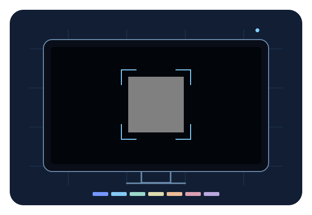

TU PANTALLA. UN BUEN PUNTO DE PARTIDA.
La imagen
empieza aquí.
Muestra un patrón en la tele. Comprueba qué puede captar tu móvil. El primer paso hacia una mejor imagen, con límites claros.
Sin cuenta. Sin micrófono. Sin subir imágenes.

Un pequeño patrón. Una pregunta importante.Este experimento comprueba los controles de cámara y la estabilidad de la captura. No mide la precisión del color ni calibra tu tele.
COMPROBACIÓN DEL MÓVIL
Mira el mismo patrón.
La cámara está apagada.
Elige el patrón de la tele
Usa el complemento en la tele o abre la pantalla de patrones en tu monitor. Las dos pantallas deben indicar el mismo ID.
Mostrar este patrón en una pantallaConfirmación manual. El móvil y la tele no están emparejados automáticamente.
Mantén el móvil quieto
Tomamos muestras del centro de la cámara durante un máximo de cinco segundos. Las imágenes permanecen en la memoria del móvil.
- Capacidad manual indicada
- Cámara apagada
- Última exposición observada
- Cámara apagada
- Último balance de blancos observado
- Cámara apagada
- Último enfoque observado
- Cámara apagada
- Medición
- Precisión del color no validada
Los modos se leen al iniciar la cámara y al inicio/final de la captura, no continuamente. La capacidad manual no significa que el modo manual esté activo. TV Tune no cambia ni bloquea los controles de cámara.
OBSERVACIÓN DE LA CAPTURA
Lo que ha observado la cámara.
Fotogramas distintos
Intervalo capturado
Desviación RGB máxima (códigos de 8 bits)
Estos valores describen vídeo procesado por la cámara. Una captura estable puede tener colores incorrectos. En los campos negro y blanco es normal alcanzar los extremos de los códigos.